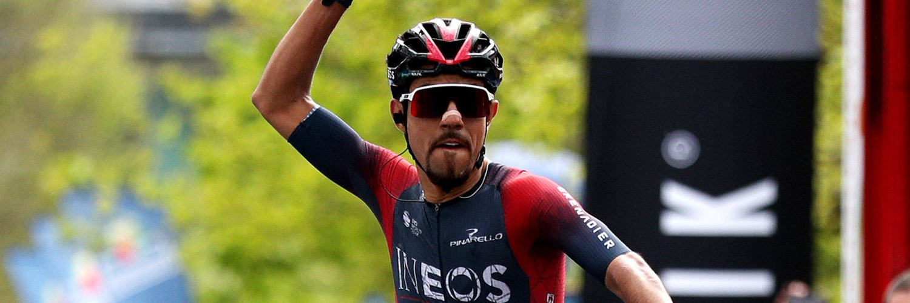
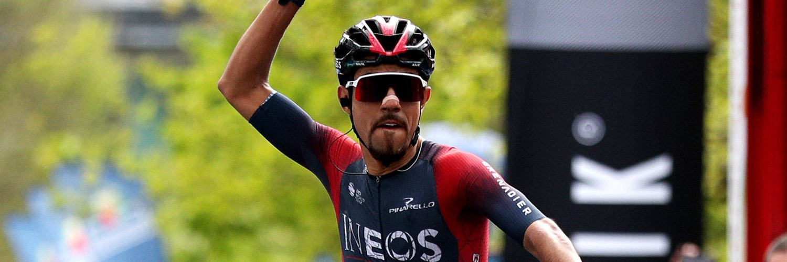

CICLISTAS MAS IMPORTANTES DEL MOMENTO
CICLISTAS INTERNACIONES
1
TADEJ POGACAR
Nacionalidad: Eslovenia
Fecha de Nacimiento: 21 de septiembre de
1998
Edad: 24 años
Disciplina: Ciclocrós y ruta
Equipo actual: UAE Team Emirates
Grandes Vueltas: Tercer lugar Vuelta a
España
(2019), campeon Tour de Francia (2020 y 2021), segundo lugar Tour de Francia (2022)
2
WOUT VAN AERT
Nacionalidad: Bélgica
Fecha de Nacimiento: 15 de septiembre de
1994
Edad: 28 años
Disciplina: Ciclocrós y ruta
Equipo actual: Team Jumbo-Visma
Grandes Vueltas: Abandono (2019), 20°
lugar
(2020), 19° lugar (2021), 21° lugar (2022) en Tour de Francia (2020 y 2021)
3
REMCO EVENEPOEL
Nacionalidad: Bélgica
Fecha de Nacimiento: 25 de enero de 2000
Edad: 23 años
Disciplina: Ruta
Equipo actual: Soudal Quick-Step
Grandes Vueltas: Abandono Giro de Italia
(2021), campeón en Vuelta a España (2022)
4
JONAS VINGEGAARD
Nacionalidad: Dinamarca
Fecha de Nacimiento: 10 de diciembre de
1996
Edad: 26 años
Disciplina: Ruta
Equipo actual: Team Jumbo-Visma
Grandes Vueltas: 46° lugar Vuelta a
España
(2020),
2° lugar Tour de Fracia (2021), campeón Tour de Francia (2022)
5
VAN DER POEL
Nacionalidad: Bélgica
Fecha de Nacimiento: 19 de enero de 1995
Edad: 28 años
Disciplina: Ruta, montaña y ciclocrós
Equipo actual: Alpecin-Fenix
Campeonato Mundial Ciclocrós: campeon
mundial
(2015, 2019, 2020, 2021, 2023),
2° lugar (2017), 3° lugar (2018)
RANKING UCI INTERNACIONAL
CICLISTAS NACIONALES
 

1
SERGIO HIGUITA
Nacionalidad: Colombia
Fecha de Nacimiento: 1 de agosto de 1997
Edad: 25 años
Disciplina: Ruta
Equipo actual: Bora-Hansgrohe
Grandes Vueltas: 14° lugar Vuelta a
España
(2019), Abandono (2020) y 25° lugar (2021) Tour de Francia, 23° lugar (2022) Vuelta a
España.
2
DANIEL MARTINEZ
Nacionalidad: Colombia
Fecha de Nacimiento: 25 de abril de 1996
Edad: 26 años
Disciplina: Ruta
Equipo actual: INEOS Grenadiers
Grandes Vueltas: 5° lugar (2021) Giro de
Italia,
29° lugar (2022) Tour de Francia.
3
MIGUEL ÁNGEL LÓPEZ
Nacionalidad: Colombia
Fecha de Nacimiento: 4 de febrero de 1994
Edad: 29 años
Disciplina: Ruta
Equipo actual: Team Medellín-EPM
Grandes Vueltas: 4° lugar (2022) Vuelta a
España,
Abandono (2022) Giro de Italia
4
ESTEBAN CHAVES
Nacionalidad: Colombia
Fecha de Nacimiento: 17 de enero de 1990
Edad: 33 años
Disciplina: Ruta
Equipo actual: EF Education-EasyPost
Grandes Vueltas: Abandono (2022) Vuelta a
España
5
FERNANDO GAVIRIA
Nacionalidad: Colombia
Fecha de Nacimiento: 19 de agosto de 1994
Edad: 28 años
Disciplina: Ruta y pista
Equipo actual: Movistar Team
Grandes Vueltas: 128° lugar (2022) Giro
de
Italia
COLOMBIANOS RANKING UCI INTERNACIONAL
| POS (Internacional) | Corredor | Equipo | Puntos |
|---|---|---|---|
| 17 | HIGUITA Sergio | BORA-hansgrohe | 1.904 |
| 34 | MARTINEZ Daniel | INEOS Grenadiers | 1.266 |
| 54 | LÓPEZ Miguel Ángel | Team Medellin-EPM | 1.067 |
| 79 | CHAVES Esteban | EF Education-EasyPost | 805 |
| 91 | GAVIRIA Fernando | Movistar Team | 740 |
| 96 | URAN Rigoberto | EF Education-EasyPost | 698 |
| 120 | MOLANO Sebastian | UAE Team Emirates | 611 |
| 124 | BUITRAGO Santiago | Bahrain Victorious | 600 |
| 136 | QUINTANA Nairo | Sin contrato | 550 |
| 156 | SOSA Ivan | Movistar Team | 500 |